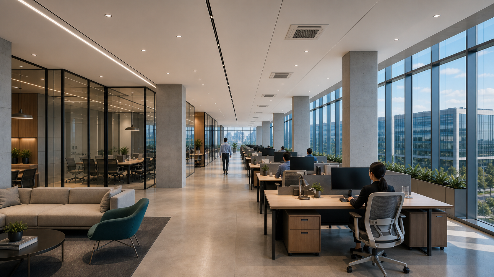
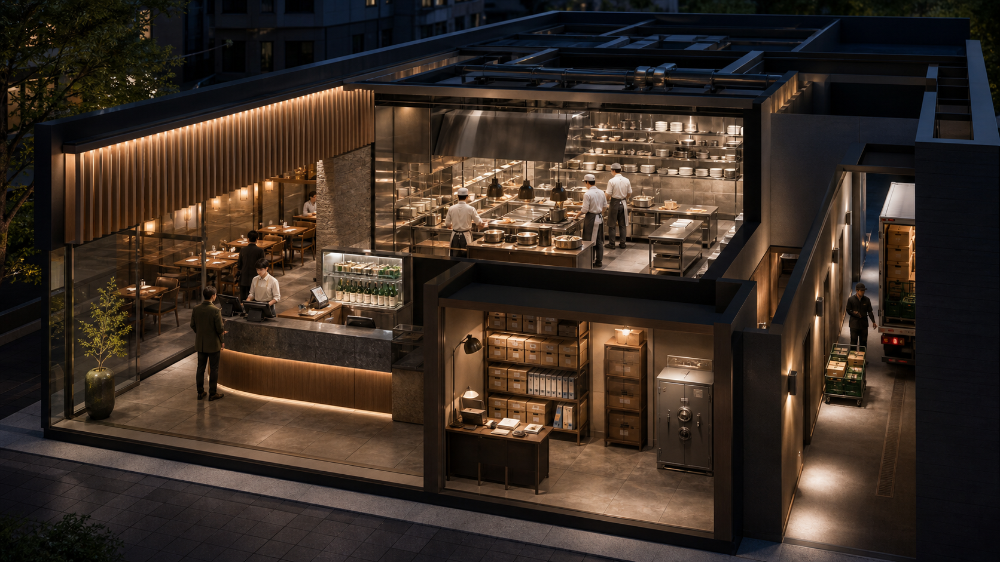
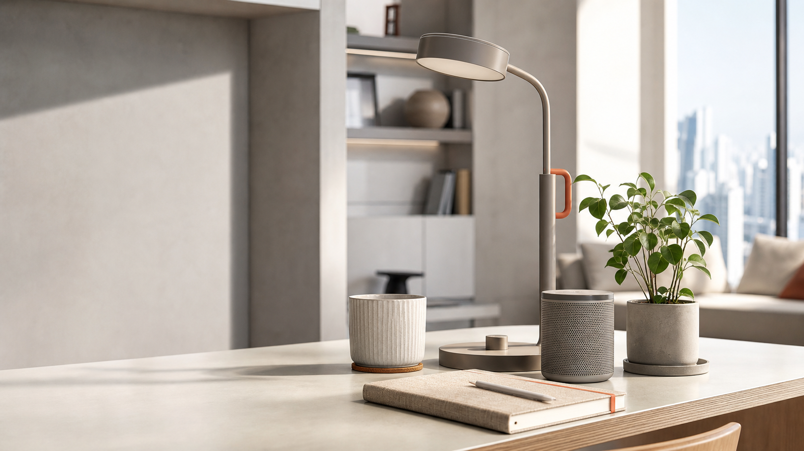

SESSION 03
개발의 원리를
눈으로 이해합니다
화면을 누른 순간, 보이지 않는 곳에서 이어지는 일들을 살펴봅니다.
SIGNATURE SCENE
아이디어가 진짜 서비스가 되는 과정

SITE CAMERA · LAND
01
SITE
조명
급수 설비
회의실
업무공간
RESTAURANT CUTAWAY
식당 안의 역할을 알면 개발 용어가 보입니다
공간을 하나씩 눌러보세요

주문서주문 접수
ORDER 24확인 · 조리 · 전달
ORDER #24기록 보관
PAYMENT외부 서비스 연결
FRONTEND EXPERIENCE
우리가 매일 보고 누르는 이 화면이 프론트엔드입니다
검색, 메뉴, 상품, 장바구니, 팝업을 직접 눌러보세요
oneul-market.kr안전한 연결

새로운 일상의 도구공간을 바꾸는
공간을 바꾸는
작은 선택
오늘의 취향을 담은 생활용품을 만나보세요.
무료 배송3만원 이상 주문간편 결제한 번에 주문 완료쉬운 반품7일 이내 신청
이번 주 신상품생활을 가볍게 만드는 물건
총 24개김
반갑습니다김바이브 님
주문 내역과 찜한 상품을 한 곳에서 확인합니다.
기획부터 배포까지 진행한 과정과 막혔던 부분을 정리했습니다.
환경변수와 빌드 로그를 확인해 문제를 찾았습니다.
입력 오류와 완료 상태가 더 잘 보이도록 화면을 수정했습니다.
910111213
14:0015:3017:00
#240611-18김바이브워크스페이스 램프결제 완료
#240611-17박코딩리넨 노트 세트확인 필요
#240611-16이프롬프트컴팩트 스피커배송 준비
장바구니에 담았습니다화면이 행동의 결과를 바로 알려줍니다.
FRONTEND사용자가 누른 요소클릭한 요소가 어떤 역할을 하는지 여기에 설명합니다.
로그인
오늘마켓에 오신 것을 환영합니다UI VS UX
예쁜 화면과 쉬운 경험은 다릅니다
CHECKOUT A방향을 잃는 결제
대기 중탐색 4회현재 단계와 최종 금액을 알기 어렵습니다
문제다음 행동이 여러 개입니다어떤 버튼을 먼저 눌러야 하는지 판단해야 합니다.
같은 목표결제 완료
CHECKOUT B한눈에 읽히는 결제
대기 중선택 1회현재 위치, 금액, 다음 행동이 분명합니다
개선다음 행동이 하나로 보입니다현재 단계와 최종 금액을 확인하고 바로 결제합니다.
UI버튼 이름 · 색 · 크기 · 배치
UX현재 위치 · 다음 행동 · 예상 결과
좋은 경험덜 찾고 · 덜 고민하고 · 다시 시도
INTERFACE ANIMATION
애니메이션은 화면의 변화와 다음 행동을 이해시킵니다
열 가지 예시를 하나씩 재생해 보세요
오늘마켓 · 화면 애니메이션 실험실0
NEW ARRIVAL좋은 움직임은
방향을 알려줍니다클릭 전과 후가 자연스럽게 이어집니다.
방향을 알려줍니다클릭 전과 후가 자연스럽게 이어집니다.
저장이 완료되었습니다다음 단계로 이동할 수 있습니다.
추천신상품베스트
vibe@올바른 이메일 형식을 입력해 주세요
7일 이내 반품 가능내용이 펼쳐지며 주변 요소가 자연스럽게 이동합니다.
나의 쇼핑에 저장됨
소개기능리뷰
메뉴 전환새 화면이 어디에서 나타났는지 보여줍니다메뉴가 갑자기 생기는 대신 화면 가장자리에서 들어오면 구조를 이해하기 쉽습니다.
BACKEND ROUND TRIP
브라우저 뒤의 주문 처리실을 따라가 봅니다
store.local / checkout
VIBE KIT
WORKSHOP EDITION바이브코딩 스타터 키트재고 12개 · 무료배송39,000원
주문이 완료되었습니다#ORDER-2406
REQUEST
RESPONSE
ORDER39,000
READY브라우저에서 주문을 기다리는 중
들어온 값상품 · 수량 · 금액처리 결과주문 대기
브라우저에서 클릭→서버가 검사 · 결제 · 저장→응답이 화면으로 복귀
DATABASE STORAGE
데이터베이스는 필요한 기록을 알맞은 보관함에 넣습니다
행동을 누르고 어떤 기록이 어디로 이동하는지 보세요
오늘마켓 / 계정과 주문
새 계정 만들기오늘마켓 회원가입
다시 만나서 반갑습니다로그인
프로젝트 기록새 게시글 작성
주문 상품워크스페이스 램프
회원가입 정보를 전송합니다회원정보 창고에 새 기록이 만들어집니다.
서비스 기록 보관실
필요할 때 저장하고 다시 찾습니다회원 기록김바이브 · vibe@example.com
회원정보 창고이름 · 이메일 · 로그인 정보
김바이브회원 1,284명
게시글 창고제목 · 내용 · 작성자
첫 프로젝트 기록게시글 3,892개
상품 창고상품명 · 가격 · 남은 재고
램프 재고 12개상품 142개
주문내역 창고주문자 · 상품 · 결제 결과
주문 #2406주문 8,421건
회원정보 창고에 새 기록을 보관합니다저장
CREATE새 회원 기록 생성
기록이동 중
SERVICE CONNECTION
API는 내 서비스가 다른 서비스에 부탁하고 답을 받는 창구입니다
나의 여행 준비
서울--°날씨 정보를 기다리는 중
외출 전에 현재 날씨를 확인합니다.
1부탁하기“서울 날씨를 알려주세요”
요청
API 창구정해진 약속으로 전달누가, 무엇을, 어떤 방식으로 요청했는지 확인합니다.
응답
3답 받기“서울은 24도, 맑음”
서울 날씨?24° 맑음
기상 정보 제공처오늘의 서울
SEOUL37.5665° N · 126.9780° E
LIVE맑음관측 데이터 정상
현재 기온24°하늘 상태맑음
연결 준비내 화면은 외부 서비스의 답을 기다리고 있습니다.
내 서비스가 부탁→API가 전달→외부 서비스가 답변→내 화면에 표시
SCREEN ANATOMY
하나의 사이트 화면도 역할이 다른 여러 요소로 이루어집니다
오늘마켓 / 신상품
장바구니에 담았습니다오른쪽 위 숫자가 2로 바뀌었습니다.
전체 화면
큰 화면을 통째로 요청→결과가 모호함／역할별 요소를 지정→수정이 정확해짐
PRACTICE SESSION
30분 동안 각자의 프로젝트를 진행합니다
PRACTICE30:00남은 시간
NEXT · SESSION 04
다음 시간에는
서비스의 방을 찾아갑니다
화면에서 본 버튼이 어느 파일에 있고, AI가 어떤 폴더를 수정했는지 직접 추적합니다.
파일 구조폴더의 역할수정 위치 찾기의존 관계
오늘마켓워크스페이스 램프
BUTTON
app/
components/
styles/
EXPLORERvibe-project
▾ apppage.tsxlayout.tsx▾ componentsOrderButton.tsxOrderComplete.tsx▾ apiorders/route.tsglobals.css
화면의 버튼components/OrderButton.tsx
오늘 만든 기능→다음 시간에는 그 기능의 파일 위치를 찾습니다